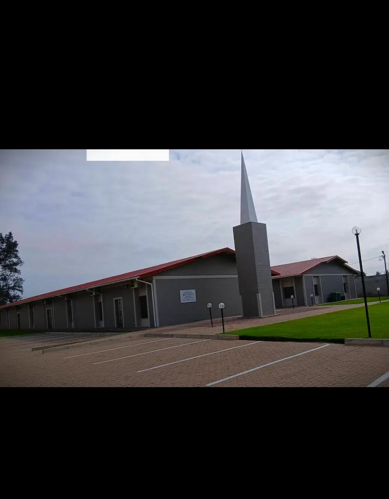
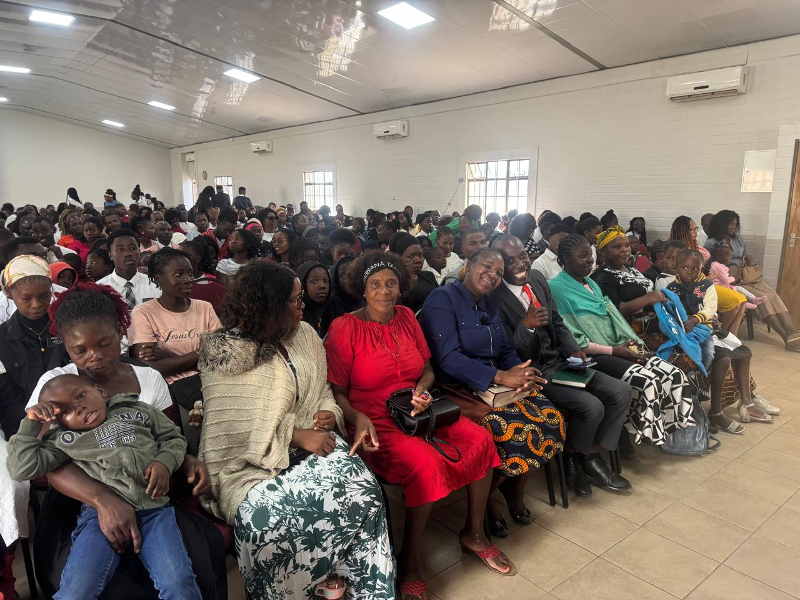

Welcome to the T3 Ward
Welcome to the official website of the T3 Ward of The Church of Jesus Christ of Latter-day Saints. We are grateful for your visit and hope this website helps you learn more about our ward, our activities, and our faith in Jesus Christ.
Our Purpose
The purpose of the T3 Ward is to help individuals and families come unto Jesus Christ through worship, service, learning, and fellowship. We strive to strengthen faith, support one another, and build a loving community.
Our Ward Family

Our ward is made up of members who seek to follow the teachings of Jesus Christ. Through service projects, youth programs, family activities, and Sunday worship, we work together to uplift and strengthen our community.
What You Can Find on This Website
This website provides the following information:
- Information about the T3 Ward
- Meeting schedules and announcements
- Youth and family programs
- Service opportunities
- Memorial information
- Contact information and resources
Visitors Are Welcome
Whether you are a member of the Church or simply interested in learning more, we warmly welcome you. We invite you to join us in worship and discover the joy of following Jesus Christ.